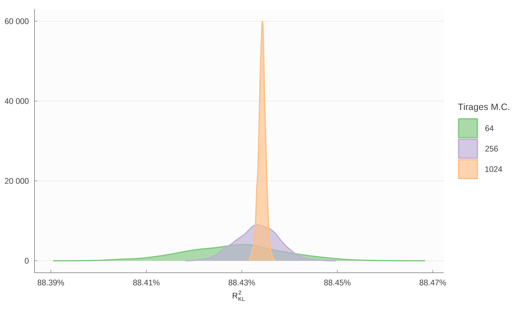

4 Estimation à La Rochelle
Nous proposons ici une première application de MEAPS à l’agglomération de la Rochelle. Cette application est issue d’un travail de quantification de scénarios de politiques publiques visant à réduire l’empreinte carbone associée aux mobilités quotidiennes et au secteur résidentiel. La quantification demande à la fois de produire une cartographie fine des émissions, en procédant par interpolation à partir de données connues à une maille moins fine et d’être en mesure de produire des évaluations des différences d’émissions de CO2 localement et à l’échelle du territoire selon les différents scénarios. Nous présentons ici deux familles de scénarios pour lesquelles MEAPS a été mobilisé :
Des scénarios de localisation de l’emploi : nous projetons la distribution des trajets en utilisant MEAPS sur deux structures spatiales de l’emploi différentes, tout en conservant la même quantité d’emploi globale. La différence entre les kilomètres parcourus suivant les différents modes dans les deux scénarios permet d’évaluer l’impact de la localisation, en distinguant la contribution du changement modal, la contribution des changements de distance pure (à mode et flux carreaux à carreaux inchangés) et la contribution des changements de flux.
Des scénarios de modification de la structure du réseau de transport. Le principe est identique à celui pour la localisation de l’emploi. C’est la matrice des distances et des temps qui est modifiée par une modification des infrastructures de transports (par exemple une ligne de bus en plus). Cette matrice de distance différente induit des temps de trajet plus petits mais uniquement pour le mode transport en commun. Elle induit un changement modal (plus de transport en commun, moins des autres modes) et enfin conduit à un changement des rangs des opportunités et donc une redistribution des flux de carreau à carreau.
Dans les deux familles de scénarios, les simulations par MEAPS permettent de construire un contrefactuel et des alternatives à un niveau fin, croisant la localisation au carreau 200m pour les résidences (5 456 carreaux pour la Rochelle et le périmètre du SCOT) et les opportunités (6 326 carreaux dans le périmètre de 33 km autour de l’agglomération de la Rochelle), soit 34,5 millions de flux et de modes. L’agrégation de ces informations est alors possible à des niveaux plus généraux pour analyser les impacts. La conversion des kilomètres ou des minutes en émissions de CO2 pour la voiture est effectuée à partir de coefficients de conversion conventionnels, ce qui permet d’étendre les indicateurs au champ des émissions de gaz à effet de serre.
4.1 Emplois, résidents au carreau Inspire 200m
La carte de la zone considérée est représentée sur la figure fig-zoneslr. L’analyse est limitée aux résidents du périmètre du Schéma de COhérence Territoriale (SCOT) et considère les emplois dans un rayon 33 kilomètres autour des lieux de résidence. Cette carte est construite à partir des données carroyées de C200 (2022) à la résolution du carreau 200m Inspire1. Nous ajoutons à ces données la localisation de l’emploi sur la même grille en utilisant les fichiers fonciers et les données d’emplois localisés de MOBPRO (2022). La méthode consiste à imputer par code NAF les emplois de chaque commune selon MOBPRO (2022) aux surfaces professionnelles à la parcelle issues des fichiers fonciers. Cela permet ensuite de localiser au carreau 200m les emplois. Cette méthode est assez grossière, puisqu’en particulier la ratio personne/surface n’est pas constant d’une entreprise à l’autre, mais elle fournit une bonne première approximation d’autant que l’extrapolation ne dépasse pas l’échelle de la commune. Elle est en tout cas très supérieure à une imputation uniforme.
1 INfrastructure for SPatial InfoRmation in Europe est depuis 2007 une directive pour la production de données spatialisées. Inspire définit une grille de carroyage et son système de projection harmonisée. C’est ce qui suit l’INSEE dans la diffusion des données carroyées. Voir https://inspire-geoportal.ec.europa.eu pour la définition de la grille et des jeux de données.

Sources : OSM, Mapbox, IGN, carroyage INSEE 2017, Flores et fichiers fonciers 2018
4.2 Calcul des distances par mode
Un ingrédient important de l’analyse du territoire est la prise en compte des distances entre chaque paire possible résidence/emploi. Contrairement à l’analyse synthétique, nous ne nous contentons pas de la distance euclidienne.
Pour ce faire nous calculons à partir d’un calculateur d’itinéraire (R5 de Conveyal (Conway, Byrd, et Linden 2017; Conway, Byrd, et Van Eggermond 2018; Conway et Stewart 2019) en utilisant le package {r5r} (Pereira et al. 2021) les distances et surtout les temps de transport pour quatre modes (voiture, vélo, transport en commun, marche à pied). Les temps de transport calculés pour chaque paire de carreaux de résidence et d’emploi, en retenant le centre des carreaux, tiennent compte des différentes contraintes de circulation (vitesses limites pour la voiture, sens de circulation, pénalité pour changement de direction, accès autorisé ou restreint suivant le mode, stress à vélo). Concernant les déplacements en voiture, nous ne prenons pas en compte à ce stade la congestion. Concernant les transports en commun, le niveau de détail est assez grand, puisque les fréquences de circulations des véhicules ainsi que les correspondances sont prises en compte. Dans certaines villes, il est possible d’accéder à une information sur les temps de parcours effectifs (mesurant ainsi la congestion ou la disponibilité du réseau) en complément des horaires théoriques. Ces informations ne sont pas disponible pour l’agglomération de la Rochelle et donc cette possibilité n’est pas explorée. L’accès aux données GTFS impose quelques limites, comme par exemple la non prise en compte des réseaux scolaires ou d’autres réseaux locaux ou privés non publiés sous ce format. La modification du réseau de transport comme l’ouverture d’une ligne ou l’accroissement de fréquence est pris en compte en modifiant la matrice des distances et temps par mode entre chaque carreau de résidence et chaque carreau de destination. Dans le cas de l’agglomération de la Rochelle, le nombre de paires calculés est de l’ordre de 16 millions.
A partir des temps de trajets par mode, nous appliquons un modèle de choix discret, Random Utility Model (RUM) à la McFadden, estimé sur l’enquête mobilité des personnes MOBPERS (2021) en utilisant les données de mobilités professionnelles MOBPRO (2022) pour caler les flux commune à commune. L’estimation de ce modèle est détaillée dans un autre document (référence à insérer).
Les distances entre chaque paire de cases permettent de calculer un indicateur d’accessibilité qui joue un rôle central dans le modèle radiatif, et donc dans MEAPS, en remplaçant la distance par la somme des opportunités en deçà d’un seuil de temps. Les cartes des figure fig-accto1k, figure fig-accto5k, figure fig-accto10k, figure fig-accto20k représentent les temps pour accéder à un seuil d’emplois en utilisant différents modes de transport.

Calcul des auteurs.
Source : OSM, Mapbox, IGN, Conveyal R5, carroyage INSEE 2017, Flores et fichiers fonciers 2018

Calcul des auteurs.
Source : OSM, Mapbox, IGN, Conveyal R5, carroyage INSEE 2017, Flores et fichiers fonciers 2018

Calcul des auteurs.
Source : OSM, Mapbox, IGN, Conveyal R5, carroyage INSEE 2017, Flores et fichiers fonciers 2018

Calcul des auteurs.
Source : OSM, Mapbox, IGN, Conveyal R5, carroyage INSEE 2017, Flores et fichiers fonciers 2018
Les courbes d’accessibilité de la figure fig-comaccess sont construites en prenant la moyenne par commune de résidence des temps d’accès pour les différents seuils d’emplois. C’est cette courbe qui découle du modèle théorique présenté plus haut (sec-meaps) et qui détermine les choix individuels de déplacement comme de localisation. Ces courbes font apparaître une propriété propre aux villes littorales : si pour des temps courts, l’accès à l’emploi est maximal à la Rochelle, en revanche d’autres communes jouissent d’une position plus “centrale” lorsqu’on accepte des temps de trajets supérieurs à 30 minutes en voiture.

4.3 Ajustement de MEAPS sur MOBPRO
4.3.1 émiettage, coefficient d’ajustement et ergodicité
La première confrontation empirique peut se faire avec le modèle MEAPS utilisé tel quel, c’est-à-dire en ne prenant en compte que la fuite. Pour chaque individu on peut observer dans MOBPRO (2022), par commune de résidence, un taux de fuite, c’est-à-dire les résidents actifs qui ne travaillent pas dans le périmètre retenu des communes d’emplois (figure fig-zoneslr). ce taux de fuite est identique pour tous les résidents d’une commune, par la résolution spatiale que permet MOBPRO (2022). En revanche, les informations sur la localisation des emplois et des résidents ainsi que la structure des distances (mesurées comme le temps de parcours par mode en utilisant le routage sur les réseaux disponibles) sont connu à une résolution plus fine. Sur la base de ces informations, on peut donc simuler à partir de MEAPS des flux entre carreaux, agrégés entre communes, qui nous servirons de référence.
Dans les simulations synthétiques présentées dans le sec-synt les flux sont simulés avec une granularité individuelle. Chaque emploi ou chaque individu y est localisé et les distances sont calculées entre ces localisations et les flux par individu sont siimulés. L’agrégation spatiale à la maille hexagonale se fait ensuite. Dans le cas des données que nous utilisons pour La Rochelle, les carreaux ne sont pas occupés par un seul résident actif ou un seul emploi. Il y a des paquets pour lesquels il n’est pas nécessaire de refaire les simulations individu par individu ou emploi par emploi. Nous les avons donc regroupés et simuler en conséquences dans MEAPS. Cela pose cependant un problème puisque le choix d’un ordre de priorité s’exerce maintenant sur des individus en paquets de taille différente, un faible nombre de ces paquets étant de taille très supérieure à la médiane des autres. Ainsi, lorsqu’un paquet de taille importante est à son tour de choisir, il peut saturer des emplois en une seule passe. Pour résoudre ce problème, nous procédons à un émiettage dans lesquels les paquets de plus grande taille sont divisés en paquets plus petits. Pour un seuil d’émiettage de 20 individus (le flux le plus important de MOBPRO (2022) pour La Rochelle est de 18 000) , on augmente le nombre de paquets d’environ 50% ce qui permet de conserver un problème de taille globale raisonnable tout en réduisant le problème de granularité des paquets. De plus, les paquets sont tirés au sort dans leur ordre de priorité en tenant compte de leur taille afin d’éviter une sur-représentation des paquets de petite taille dans les ordres de priorité.
Sur la base des flux simulés, on peut définir un critère d’ajustement, assimilable à un R^2 à partir de l’entropie relative de Kullback-Leibler (Kullback et Leibler 1951). L’entropie relative est définie pour deux distributions de probabilités p et q comme suit dans le cas discret :
KL(p,q) = \sum_{i}p_i \times log(p_i/q_i)
Cette mesure ressemble à une distance, mais n’est pas symétrique et ne vérifie pas l’inégalité triangulaire. Elle s’interprète dans le cadre de la théorie de l’information comme la quantité relative d’information supplémentaire nécessaire pour exprimer q à partir de p. En suivant Colin Cameron et Windmeijer (1997) on peut construire une mesure de la qualité de l’ajustement R_{KL}^2 de la façon suivante, où \hat{q} et q_0 sont deux distributions, respectivement celles estimée et de référence, que l’on compare à p :
R_{KL}^2 = 1 - \frac{KL(p,\hat{q})}{KL(p, q_0)}
La distribution de référence est choisie comme une distribution uniforme, par analogie avec le calcul de la variance dans un R^2 habituel où l’on régresse sur une constante. On écrit :
\begin{aligned} KL(p,q_{ref}) &{}= \sum_{i}p_i \times log(p_i/unif) \\&{}= \sum_i p_i \times log(p_i) + log(N) \end{aligned}
Ceci n’est autre que l’entropie de la distribution p à une constante près (N est le nombre de résidents actifs ou d’emplois). Le coefficient d’ajustement ainsi défini peut avoir pour des distributions particulières des valeurs négatives ou supérieures à 1. Il fonctionne assez bien malgré tout dans un grand nombre de cas.
Une première évaluation du modèle MEAPS est de comparer ce que l’on obtient avec MEAPS et un modèle gravitaire simple, estimé sur MOBPRO (2022), à la maille communale et donc sans recourir à la modélisation des réseaux de transport décrite plus haut. Le modèle gravitaire estimé est le suivant, où f_{i,j} est le flux entre la commune i de résidence et la commune j d’emploi, a_i sont les actifs en i, e_j l’emploi en j, et t_{i,j} le temps de parcours entre i et j en minutes issue des données calculées au carreau 200m agrégés à la maille communale :
log(f_{i,j}) = log(a_i) + log(e_j) - \underset{(7.98)}{0.012} \times t_{i,j} - \underset{(131.7)}{10.02} \\ R^2_{adj} = 2.29\%, 2034\ d.o.f
En ajoutant à la comparaison MEAPS à la maille carreau 200m, on peut évaluer l’intérêt de la modélisation à la maille infra-communale. La figure fig-divmailles représente l’ajustement dans les trois options comparées. Le modèle gravitaire à la maille communale donne un premier ajustement des données et le R^2_{KL} est de 77.8%. MEAPS à la maille communale donne un résultat moins bon que le modèle gravitaire, échouant sans plus de paramètres à bien représenter les flux. Dans ce modèle le R^2_{KL} est négatif. En revanche, MEAPS simulé sur le carreau 200m puis agrégé à la maille communale donne un résultat bien meilleur que les deux précédents modèles. Le R^2_{KL} est de 88.4% et graphiquement l’ajustement apparaît plus satisfaisant. La seule utilisation des données de réseau et de localisation au carreau 200m permet donc une bien meilleure prédiction de MOBPRO (2022) sans ajouter de paramètre estimé.

La figure fig-reflr représente le R^2_{KL} que l’on calcule pour le modèle de référence (MEAPS à la maille carreau 200m) en effectuant des simulations de Monte-Carlo pour différentes tailles de l’échantillon d’ordre de priorité. Sans surprise, plus l’échantillon est grand, plus la distribution des R^2_{KL} est étroite. Pour 256 tirages, l’intervalle de confiance à 95% pour le R^2_{KL} est de l’ordre de 0.017% (contre 0.04% pour 64 tirages et 0.003% pour 1024 tirages) ce qui sera suffisant pour la plupart des applications.
La valeur moyenne du R^2_{KL} obtenue pour le MEAPS de référence est de 88.4%.

4.3.2 Stratégies d’apprentissage
L’information à la maille carreau 200m est pertinente pour reproduire les données de MOBPRO (2022). Pour aller plus loin dans l’ajustement, nous introduisons pour chaque paire (i, j) un paramètre qui modifie la probabilité d’absorption de l’individu i par l’emploi j. On définit c_{abs} comme la chance d’absorption, qui est égale à la probabilité d’être absorbé divisée par la probabilité de ne pas être absorbée, soit c_{abs} = p_{abs}/(1-p_{abs}) . Dans le modèle de référence, cette chance d’absorption est similaire pour tous les emplois considérés par un individu et elle ne dépend que de la probabilité de fuite. Un moyen simple d’injecter de l’information dans le modèle consiste alors à modifier cette chance d’absorption selon les individus et les emplois qu’ils considèrent. Les modifications des probabilités d’absorption peuvent alors être paramétrées par des odds-ratios (des ratios de chances relatives) \omicron_{ij} de telle manière que la nouvelle chance d’absorption de i en j soit égale à \tilde{c}_{abs,ij} = \omicron_{ij} \times c_{abs}. L’odds-ratio \omicron_{ij} est un paramètre entre 0 et +\infty et i et j indexent les communes de départ et d’arrivée. La nouvelle probabilité d’absorption s’écrit alors à partir de la chance d’absorption de référence et de l’odds-ratio comme suit :
\tilde{p}_{abs,ij} = \frac{c_{abs} \times \omicron_{ij}} {1+c_{abs} \times \omicron_{ij}}
Une première stratégie de calage de MEAPS consiste à calculer autant d’odds-ratios qu’il y a de paires communes résidentes - communes d’emplois de manière à reproduire le plus fidèlement possible les flux agrégés de MOBPRO (2022). Cette méthode conduit en quelque sorte à saturer le modèle puisque l’on estime un nombre de paramètres proche du nombre de degrés de liberté imposé par MOBPRO (2022). Cette stratégie d’apprentissage est analogue à ce qui se fait en machine learning du fait de la démultiplication du nombre de paramètres à estimer. La limite de cette approche est le sur-ajustement (overfitting) qu’elle induit. Celle-ci est habituellement corrigée en ajoutant une pénalité à la complexité du modèle au sein de la fonction d’optimisation. Cela peut également se faire par pruning, en éliminant a posteriori les paramètres dont la contribution à l’explication des données est inférieure à un seuil.
Les paramètres issues de cette approche contiennent une information qui peut ensuite être exploitée. Les odds-ratios s’interprètent alors relativement simplement : ceux qui sont supérieurs à 1 indiquent que le flux de mobilités professionnelles correspondant sont plus fréquents que ce que prévoit le modèle de référence ; et inversement pour les odds-ratios inférieurs à 1.
Cette approche pose généralement un problème difficile d’optimisation algorithmique. Une approche brutale, qui consiste à minimiser une fonction de perte mesurant l’écart entre les flux estimés et les flux observés, se heurte à la grande dimension de l’espace des paramètres. En outre, comme toujours dans ce type d’exercice statistique, l’enjeu consiste à extraire des données disponibles des enseignements généraux en délaissant ce qui relève de la particularité d’un jeu de données. C’est toute la difficulté du surapprentissage (overfitting) que nous avons évoquée.
Une seconde approche, plus parcimonieuse, consiste à définir une forme fonctionnelle pour les odds-ratios ou encore à regrouper les odds-ratios en quelques clusters pour ensuite n’évaluer qu’un petit nombre de paramètres. Ceci suppose de modéliser la structuration des odds-ratios à partir d’a priori sur les dimensions pertinentes.
4.3.3 Estimation de la première approche
A ce stade, nous utilisons un algorithme naïf pour trouver une solution au problème posé. Nous calculons les odds-ratios \omicron^k_{ij} qui permettraient de combler l’écart entre les prévisions de MEAPS effectuées avec un ensemble d’odds-ratios \omicron^{k-1}_{ij} et les données observées de MOBPRO (2022) en utilisant la formule suivante où \beta est un paramètre d’amortissement inférieur à 1 et positif et où k indexe les itérations :
\omicron^k_{ij} = \biggl(\frac{\tilde{c}^k_{abs}}{ c^{mobpro}_{abs}}\biggr)^\beta \times \omicron^{k-1}_{ij} \tag{4.1}
Nous modifions alors les \omicron_{ij} en fonction des écarts observés. Cela conduit à chercher un point fixe.
L’algorithme naïf est relativement efficace. Il converge en quelques dizaines d’itérations, s’avère stable et fait diminuer l’entropie relative. Il devra être affiné dans le futur afin de permettre une descente de gradient qui permet de minimiser explicitement l’entropie relative. L’algorithme naïf permet de réduire cette entropie relative sans assurer qu’elle est minimale.
Cet algorithme a été utilisé avec différentes contraintes sur les paramètres. Le tableau tbl-meapsR2-np indique la qualité de l’ajustement obtenu dans ces différentes configurations. La première est celle où les probabilités d’absorption sont déterminées uniquement par les fuites par commune de résidence. C’est la configuration la plus parcimonieuse en termes de paramètres et qui sert de référence. Le R^2_{KL} vaut 88% ce qui est un ajustement élevé. La seconde configuration est celle où l’on ajuste des \omicron_{ij} uniquement pour les termes diagonaux (i=j). Cette configuration ajuste donc un odd-ratio pour les résidents qui travaillent dans leur commune de résidence. Dans un certain nombre de communes, cet ajustement conduit à augmenter la probabilité d’absorption interne (figure fig-carteodd), ce qui indique que le choix de résidence n’est pas indépendant de celui d’activité. Pour la commune la plus importante (La Rochelle), en revanche, l’odd-ratio \omicron_{17300, 17300} est proche de 1. Les deux configurations suivantes laissent beaucoup plus de degrés de liberté en estimant des \omicron_{ij} librement. La première de ces deux configurations limite les \omicron_{ij} estimés à ceux représentant un total cumulé des flux mesurés par MOBPRO (2022) égal à 99.4%, soit 1 854 \omicron_{ij} . La seconde configuration estime tous les \omicron_{ij} sans limite (soit 2 033 paramètres pour 72 communes de résidence et 210 communes d’activité, avec un grand nombre de liaisons non considérées parce que nulles).
| RKL2 | Degrés de liberté | odds estimés | |
|---|---|---|---|
| Référence (odds unitiaires) | 88.4% | 1 752 | 0 |
| Diagonale (résidence égale emploi) | 95.0% | 1 681 | 71 |
| 90% des flux cumulés | 97.4% | 1 027 | 725 |
| 99% des flux cumulés | 99.3% | 0 | 1 849 |
| 100% des flux cumulés | 99.6% | 0 | 2 029 |
| Le nombre de degrés de liberté est le nombre de paires de flux non nuls dans MOBPRO, moins les contraintes en ligne et en colonne, plus un puisqu'elles sont redondantes moins le nombre de paramètres estimés. Le nombre de degré de liberté est nul pour les configurations 99% et 100% arce que le nombre de paramètres estimés est supérieur au produit des linges et des colonnes moins les contraintes. Il y a bien plus de paramètres estimés pour la configuration 100% que pour 99%. En conséquence, l'algorithme conduit à un résultat légèrement différent. | |||
la figure fig-actvsfit-np représente les flux observés et estimés pour les différentes configurations du tableau tbl-meapsR2-np. Le fait d’estimer uniquement les \omicron_{ii} diagonaux, en ajustant donc seulement les flux allant d’une commune de résidence vers elle même, donne déjà de très bons résultats en faisant passer le R^2_{KL} de 88% à 95% et en réduisant visiblement les écarts entre flux observé et flux estimé, comme le montrent les deux panneaux supérieurs de la figure fig-actvsfit-np. L’ajout de paramètres supplémentaires ne fait pas gagner beaucoup plus, d’autant que les écarts pour les flux marginaux ne sont pas tant réduits que ça. La limite de l’algorithme naïf apparaît ici, puisque le modèle complètement saturé n’ajuste pas totalement la distribution. Différents détails de l’algorithme peuvent l’expliquer, notamment la censure des odd-ratio trop faibles (<0.0001) ou trop importants (>10000) ou la prise en compte des flux nuls. Au-delà de cet argument, il est probable que pour converger vers un ajustement plus strict, il serait nécessaire de calculer la matrice des quasi dérivées des flux par rapport aux \omicron_{ij}.
Mais le coût peut être très élevé puisque cette matrice (calculée dans la partie synthétique dans un cas simple) est d’une taille considérable (1 755 \times 1 755 coefficients), surtout si l’on prend en compte que le calcul de chaque terme prend autour d’une vingtaine de secondes2.
2 Autour d’une année de vCPU…

Notons que l’échantillon des mobilités donné par MOBPRO (2022) pour l’agglomération de la Rochelle est très particulier. Une commune (La Rochelle, dont le code géographique est 17300) représente presque 29% des flux de mobilité (de La Rochelle lieu de résidence vers La Rochelle lieu d’emploi). C’est donc un schéma monocentrique, où à la fois les résidents et les emplois sont concentrés sur un territoire réduit. La résolution spatiale de MOBPRO (2022) ne nous permet pas d’en détailler la structure plus fine.
Pour les 20 plus grandes communes de l’agglomération de la Rochelle – qui comptent chacune plus de 1 000 résidents en activité – on peut représenter les odds-ratios estimés dans la configuration 100% des flux par rapport aux chances calculées dans le cas où tous les \omicron_{ij} sont égaux à 1 (des odds-ratios effectifs) en fonction de la distance entre la commune de destination et la commune de résidence3. Ce diagramme, analogue à un spectre, peut aussi être construit par commune de destination, la distance d étant la distance aux différentes communes de résidence figure fig-spectreE. L’élément le plus frappant est que les odds-ratios de i à i sont généralement supérieur à 1 (figure fig-spectreR), à l’exception de la commune de la Rochelle. Il n’émerge pas de structure particulière par rapport à la distance, si ce n’est des odds-ratios élevés pour des distances importantes
3 La distance est construite comme la distance moyenne pondérée entre les résidents de la commune de départ et les emplois de la commune d’arrivée. La pondération est le produit des emplois et des résidents pour chaque paire, normalisé à 1.


La figure fig-carteodd permet de préciser la valeur élevée des odds-ratios pour les flux internes. Les communes où sont localisés de nombreux emplois ont un odds-ratio plutôt plus faible alors qu’ils sont estimés plus élevés dans les communes plus petites et moins desservies. Pour les différentes procédure d’estimation et donc différents nombres de paramètres estimés, on observe une structure similaire dans la répartition géographique des odds-ratios, ce qui suggère que les odds-ratios estimés contiennent de l’information.
Un odds-ratio élevé dans la diagonale indique que les flux internes sont plus importants que dans le scénario de référence. Cela indique probablement un choix de résidence en lien avec l’emploi occupé en privilégiant la commune d’activité pour résidence (ou éventuellement l’inverse). Le spectre résident en fonction de la distance indique que ce phénomène, s’il est une hypothèse à très faible distance, ne persiste pas en dehors de la commune de résidence. En revanche, la figure fig-spectreE suggère que dans certaines communes, notamment Surgères, on observe des odds-ratios supérieurs à 1 pour des distances faibles, ce qui s’interprète comme le fait que les habitants des communes alentours privilégient Surgères comme lieu d’emploi.
A ce stade, les observations sont limitées par le faible nombre de communes modélisées, mais on peut espérer que l’analyse des odds-ratios estimés pourra servir à caractériser les communes en fonction des choix de résidence et d’emploi. En multipliant cette analyse pour d’autres territoires, l’information apportée par les odds-ratios pourra être inférée. Il sera aussi possible de confronter ces éléments à d’autres variables, comme le prix de l’immobilier, les loyers résidentiels ou commerciaux, la densité d’emploi.

4.3.4 Estimations paramétriques et comparaison avec le modèle gravitaire
Au lieu d’estimer directement un ensemble d’odds-ratios \omicron_{ij}, on peut proposer des formes fonctionnelles paramétriques à partir desquelles on calculera les odds-ratios. C’est une stratégie bien plus parcimonieuse. On détermine alors les paramètres de la forme fonctionnelle retenue par un algorithme standard de minimisation de l’entropie relative, qui est le critère que nous avons choisi pour comparer les distributions. Il est également possible de conduire une estimation paramétrique pour le modèle gravitaire.
Nous explorons ici trois formes fonctionnelles pour MEAPS :
Un paramètre pour tous les termes diagonaux, c’est-à-dire les flux allant d’une commune de résidence vers cette même commune pour l’emploi. Cette forme est proche de la forme “diagonale” estimé dans la sec-estnp, mais un seul paramètre est estimé – par une minimisation de l’entropie relative – au lieu de 72 par l’algorithme itératif. Formellement, \omicron_{i \neq j}=1 et \omicron_{ii} = o.
Un paramètre pour tous les termes diagonaux et un paramètre pour les communes voisines d’emploi, c’est-à-dire un terme correctif reliant une commune de résidence aux communes voisines. Une commune est voisine d’une autre si au moins 5% des trajets pondérés par les emplois et les résidents ont une distance kilométrique inférieure à 3 km. Cette définition permet d’exclure des communes limitrophes mais dont les pôles principaux sont distants. Formellement, \omicron_{ii} = o_d; \omicron_{ij\in \mathcal{V}(i)} = o_v et \omicron_{i, j \neq i, j \notin \mathcal{V}(i)} = 1.
Un coefficient pour la distance et un paramètre pour la distance de “bascule”. Formellement, en dessous d’une distance d_c , on définit un \omicron_{ij \in d_{i,j} \leq d_c} = o et \omicron_{ij \in d_{i,j} > d_c} = 1. Cette forme partage la même idée que le premier modèle, mais estime la notion de proximité au lieu de reposer sur le découpage administratif.
Chacune de ces options mesure un biais intra-communal qui peut s’expliquer par un choix conjoint de localisation de résidence et d’emploi. MEAPS offre ici la possibilité de mesurer l’intensité de ce phénomène par rapport à l’hypothèse où les emplois sont considérés indépendamment de la localisation et sont tous parfaitement substituables. Il sera intéressant de comparer les territoires de ce point de vue et de repérer et quantifier des spécificités locales, qu’elles concernent la géographie du territoire – sa structure en pôles ou en satellite –, la formation des prix de l’immobilier, le réseau de transport ou la nature de l’activité économique. On pourrait également chercher à exploiter l’information sectorielle – disponible dans MOBPRO (2022) au niveau de 5 secteurs – ou l’information sociale ou démographique – disponible au niveau communal ou de l’IRIS mais qui peut être exploitée également à un niveau plus fin avec Fidéli4.
4 Fichiers démographiques sur les logements et les individus, INSEE, https://www.insee.fr/fr/metadonnees/source/serie/s1019.
A ces formes fonctionnelles pour MEAPS, nous ajoutons deux formes fonctionnelles pour le modèle gravitaire :
- un modèle gravitaire suivant la définition équation eq-gravity où f(d)= e^{d/\delta}. Un seul paramètre \delta est estimé.
- un modèle gravitaire “équilibré” en utilisant l’algorithme de Furness, tel que décrit dans sec-compgravsynth et en estimant \delta comme dans le point 4.
On pourrait multiplier les modèles estimés5. Le propos est ici d’illustrer les possibilités de notre modélisation et de les comparer à celles du modèle gravitaire. Deux points émergent :
5 Par exemple, en faisant dépendre les odd-ratios non pas de la distance et d’une distance critique mais du rang et d’un rang critique.
MEAPS peut mieux reproduire les données, avec une qualité d’ajustement meilleure,
MEAPS ouvre des possibilités d’interprétation plus riches que celle du modèle gravitaire, parce que les fondements microscopiques de MEAPS sont explicites.
Le tableau tableau tbl-meapsR2-p résume les résultats des estimations. Le modèle de référence, dans lequel tous les emplois sont substituables pour chaque individu, fait moins bien en termes d’ajustement que les autres modèles, à l’exception notable du modèle gravitaire non équilibré. Comme on avait pu le constater dans les estimations non paramétriques, le modèle de référence a, malgré son hypothèse simplificatrice, une bonne performance, ce qui est confirmé ici par la comparaison au modèle gravitaire simple.
| RKL2 | Degrés de liberté | Paramètres | |
|---|---|---|---|
| Référence | 88.4% | 1 752 | |
| 1. Commune vers commune | 93.0% | 1 751 | NA |
| 2. Commune vers commune et voisines | 93.1% | 1 750 | od≈4.3 |
| 3. Distance carreau 200m | 94.1% | 1 750 | dc≈ 9 min |
| 4. Gravitaire sans Furness | 82.6% | 1 961 | δ≈20 min |
| 5. Gravitaire avec Furness | 90.7% | 1 751 | δ≈17 min |
| Le nombre de degrés de liberté est le nombre de paires de flux non nuls dans MOBPRO, moins les contraintes en ligne et en colonne, plus un puisqu'elles sont redondantes moins le nombre de paramètres estimés. Les unités sont des minutes de trajet pour les paramètres homogènes à une distance et sans unité pour les odd-ratios. | |||
Les estimations des modèles 1 à 3, dans lesquelles on explore un terme diagonal sous différentes formes, renforcent le diagnostic de biais communal noté dans les estimations non paramétriques. Il y a en moyenne 4 fois plus de chance de choisir un emploi (tableau tbl-meapsR2-p, lignes 1 et 2) dans la commune de résidence. L’estimation du modèle 2 montre que les communes voisines ne connaissent pas un biais comparable, bien que la chance de choisir un emploi dans celles-ci soit supérieure à 1.
L’estimation du modèle 3 indique qu’apparemment la distance explique mieux le biais communal que le découpage administratif et il convient plutôt de voir celui-ci comme un biais de proximité. En effet, le coefficient d’ajustement est supérieur de plus d’un point à celui obtenu avec le premier modèle, en perdant uniquement 1 degré de liberté. La distance de bascule est faible, autour de 9 minutes, ce qui suggère que le périmètre communal est trop large pour capturer cet effet. La chance à plus courte distance est également nettement plus élevée puisqu’au lieu d’être approximativement de 4 elle est approximativement de 19, soit plus de 4 fois plus.
Il convient à ce stade d’être prudent sur cette estimation, puisque la résolution des données est largement inférieure au seuil qui a été trouvé. La simulation est basée sur des distances et des localisations d’emplois au carreau 200m dont la précision est convaincante. Mais les flux dans MOBPRO (2022) ne sont connus que pour les communes d’origine et de départ et donc avec une résolution spatiale plus faible. La multiplication des observations peut palier à cette faible résolution spatiale, mais cela demandera d’établir une analyse des distances et des localisations sur des territoires plus grands et plus nombreux. Pour avancer, il faudrait recourir à des données de flux plus finement localisées, par exemple à partir de Fidéli6 ou de données issues de traçages numériques.
6 A partir de Fidéli, on peut préciser la localisation de chaque individu et utiliser l’information sur la commune dans laquelle il travaille. On ne peut pas en revanche localiser plus précisément la localisation de l’emploi occupé.

Les estimations paramétriques indiquent une moins bonne performance du modèle gravitaire. Sans respect des contraintes en colonne, le modèle gravitaire donne une image assez faussée des trajets. Il peine à reproduire le biais de proximité et l’influence de la distance. Le premier tend à produire un paramètre \delta très élevé alors que le second devrait au contraire imposer un \delta plus faible pour rendre compte de trajets plus longs. L’application d’une même valeur de la distance suivant des milieux plus ou moins denses handicape cette représentation. La procédure de Furness améliore la capacité du modèle gravitaire à rendre compte des données, mais, comme nous le disions, au prix de la perte du lien avec la distance telle qu’elle est formulée dans le modèle gravitaire, à savoir homogène pour tous.
La figure fig-actvsfit-grav illustre ce qui est à l’œuvre dans le modèle gravitaire. La minimisation de l’entropie relative dépend beaucoup des flux à l’intérieur de La Rochelle, qui pèsent 29% de l’échantillon. La prise en compte des autres communes diagonales n’est pas bonne, ce qui conduit à un R^2_{KL} moins bons que la référence de MEAPS (tous les emplois sont identiques pour chaque individu et ne diffèrent que par leur localisation). Le respect de la contrainte en colonne par la procédure de Furness permet une meilleure prise en compte des communes diagonales (dont le poids est de 35% dans l’échantillon La Rochelle), mais moins bonne que les modèles MEAPS paramétriques ou non.

La figure fig-distrdist confirme ce diagnostic. On y compare la distrbution cumulée en fonction de la distance kilométrique pondérée entre chaque commune pour différentes estimations, les flux de MOBPRO (2022) étant utilisé comme référence. Les performances des modèles sont comparables pour les courtes distances (i.e la commune de la Rochelle vers elle-même). Le modèle gravitaire avec ou sans Furness pêche sur les distances intermédiaires et donne trop de poids aux distances très longues. Les estimations paramétriques à partir de MEAPS parviennent bien à reproduire la distribution cumulée des distances, notamment le modèle paramétrique 3. qui retient la distance au carreau 200m comme forme fonctionnelle.

4.4 Une cartographie des émissions de CO2
La construction d’un modèle et sa calibration et sa validation sur des données permet de projeter dans des dimensions non observées les prédictions du modèle. Nous utilisons ici MEAPS, calibré sur les données MOBPRO (2022) sur l’agglomération de la Rochelle pour produire une carte au carreau 200m des émissions de CO2 liées à la mobilité professionnelle quotidienne.
Le principe est assez simple : les seuls déplacements en voiture sont considérés comme étant émetteur de CO2, ce qui est une approximation raisonnable. Les émissions liées aux transports en commun, particulièrement les bus peu occupés pourraient être ajoutées, mais elles pèsent relativement peu dans le bilan des mobilités quotidiennes. Pour estimer les déplacements en voiture nous utilisons un modèle de choix discret évoqué dans la sec-distancesparmode. Ce modèle estimé sur MOBPERS (2021) ne pose à ce stade pas de difficulté particulière, si ce n’est un problème discuté à la fin de cette section.